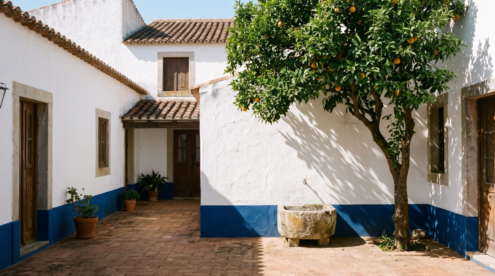
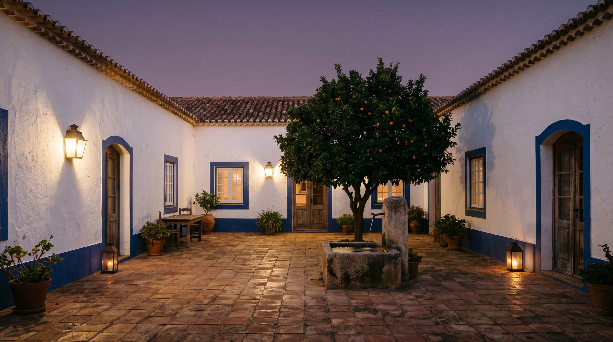
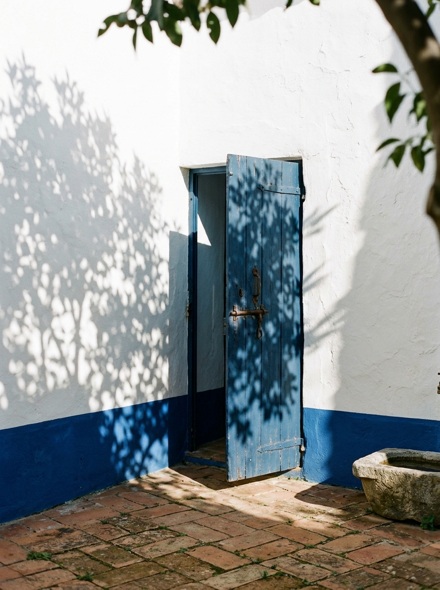
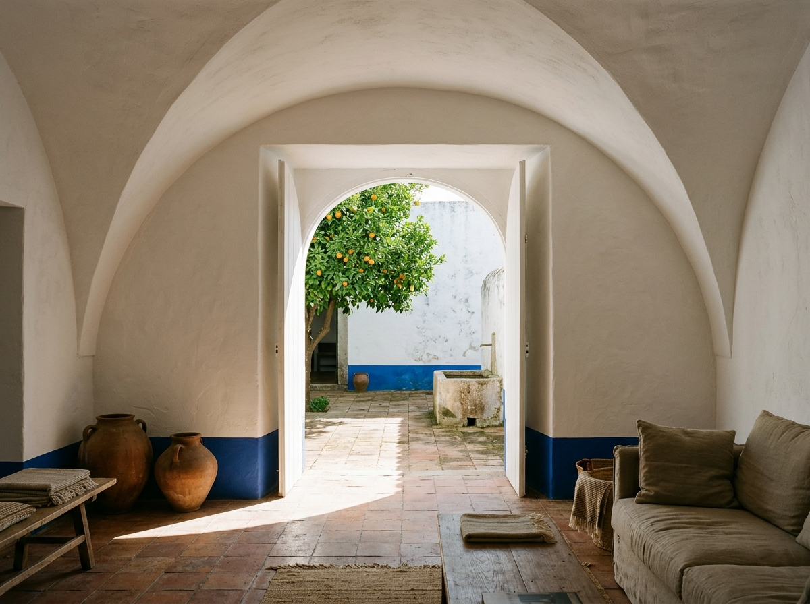
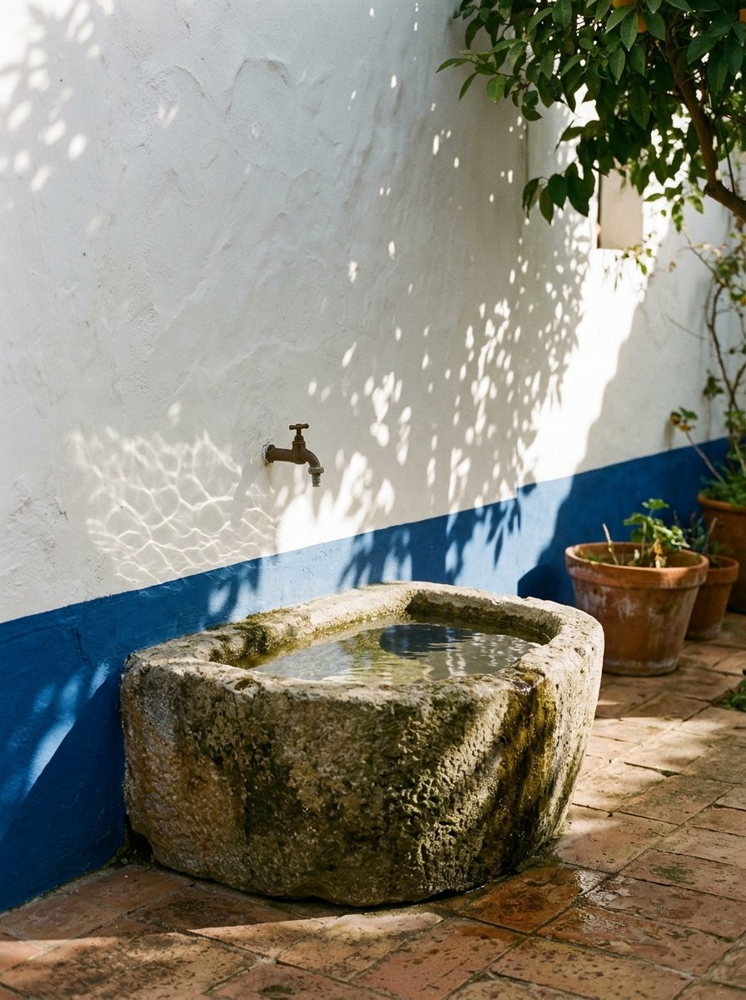
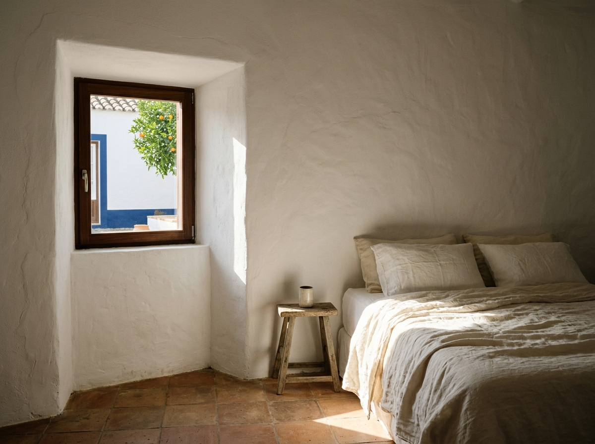
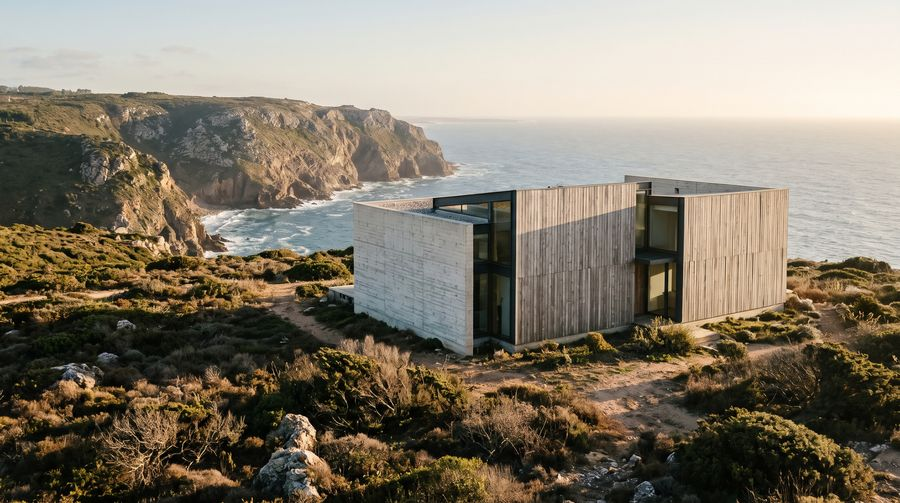

Pátio
Azul
hours of sun in the main room,
21 December9.1





A house for
the morning
From the street there is a door and nothing else. Inside, everything opens to the patio, and the thickness of the walls means the windows frame the light before it enters. In the bedroom there is one deep opening with a patch of sun the size of a pillow.
Évora is hot. The blue band at the base of the walls is there for the glare, not for the photographs, and the basin cools the air in the vaulted room by a few degrees. You can hear the difference when the fountain is off.
Its best hour
09:00Shadow of the orange tree on the white wall, at its longest.
Its worst hour
14:00In August the patio empties. Come and see how the rooms hold up.
Farol Velho
